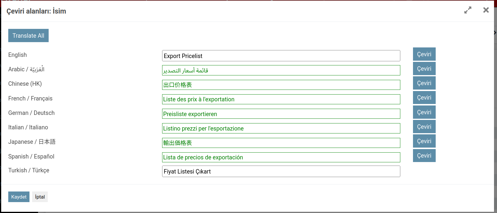

Web AI Translate
This module integrates OpenRouter LLM-based translation into Odoo's web translation dialog.
It replaces expensive per-character translation services with intelligent, context-aware
batch translation powered by large language models.
Features:
- Batch translation: Translate all languages in a single LLM call, preserving cross-language context.
- Single-language translation: Translate a specific language on demand.
- Company context: System prompt includes your company profile, industry terminology, and brand voice.
- Glossary support: Define term mappings that are injected directly into the AI prompt.
- Base language support: Set a base translation language per target language.
- All field types: Translate Char, Text, HTML, and other translatable fields.
- Copy to all: Copy English or Turkish text to all other languages instantly.
Installation:
- Install the module
web_translate_ai.
-
Go to
Settings > Technical > AI Translation Configs and create a config.
- Set your OpenRouter API key in
Settings > Technical > System Parameters (key: web_translate_ai.openrouter_api_key).
- Assign the AI Translation Config to your company.
-
Set base language for translation in
Settings > Translations > Languages.
Authors: